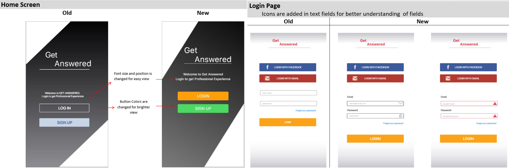

Project View
“GET ANSWERED” is an application which is designed to help user to find their daily life solutions regarding any field, whether it is business, education, health, beauty and care etc. “GET ANSWERED” is equipped with industry professionals who are ready to provide the best solutions to its users.
The Problem
Robert Just started a new business and he is facing problems in different areas. His taxation, different legal matters, different vendor problems, how to maintain his payroll. He needs a way to get his problems solved by the expert advice. We will know this to be true when we see he is getting the solution of every problem he is getting at the starting phase of his business.
Proposed Solution
An app where user can get professional advice from professional experts to solve their problems. Our app will be offering services of industry experts to solve user’s problems in respective field. The application will also give you an option to chat or video call with your experts.
UX Design
User experience design process is an iterative method that helps you continuously improve and polish your
design.

Understand and Research
Competitive Analysis
I completed a Competitive Analysis of two similar app to assess how competitors of my app have design their app and how they are fulfilling the requirements of the users. By identifying the competitors strength and weaknesses, I was able to analyze how users are interacting with these products and determine what gaps my product potentially fill in. I analyzed competitors Key Objectives, their overall strategy and their market advantage. Competitors Market profile and SWOT profile provided me useful information in the development of my strategy.

User Research
During this project I used multiple research methods. I started my research with user surveys that not only provided me valuable feedback but also helped me to create question for user interview. Research covered qualitative and quantitative methods, as well as attitudinal and behavioral. Each method provided me the data which made my steps easy to complete this project.
Research Goals
- To find out what is user first choice to solve their problems
- Does user prefer text communication or video communication?
- Get insights of the user’s expectations from this app
- Are they comfortable sharing their payment information online
User Interview
An interview script with a list of open-ended questions that targeted the motivation and factors that influence as user to surf. I engaged my audience using my personal networks and social media as well as coworkers who are active using different apps. Using this combination helped me to find the input of different users from different fields. I consolidated my results using the process of Affinity mapping which helped me to isolate information and determine how it relates to other bits of information achieving my research goals.
- People are looking for expert and professional advice for their problems
- People need a confidence that the source they are using will definitely solve their problem.
- People are not sure the solution they are getting is from verified source or is from just another person who had the same problem they are facing.
- People don’t want to waste their time online, browsing multiple sources to solve their problems. They need one stop shop
- People want to keep the record of the solutions they get from experts. So in future if they face same problem they can revisit the solution they got in past.
- People want to communicate directly with the person they are getting advice from, either video source, audio or live text chat.
- People need a confirmation that the payment platform is secure and reliable to share their payment information.

User Personas
The data I got from research conducting interviews and affinity maps I created User persons and user stories. I created 3 personas and gave them different names and roles. Personas helped me to find more details regarding their goals, needs, motivations and frustrations. User stories helped me to define what my user wants to accomplish. Understanding human needs for real life situation helped me to find the solutions and necessary functionality form user’s perspective.

User Journey & User Flow
I created User journey maps to understand the visualizing processes a user goes through in order to accomplish a goal. After establishing the individual objectives, user flows were created to see the steps user would have to take in order to complete a task.

The user flow helped me to understand how user must interact with to complete a task or achieve a goal on my app. It provided a clear process of each persona showcasing different solutions to each of their problems.
Information Architecture
After reviewing User flows and user journey, my next step was to create a site map. The basic idea of site map is to organize content so that users would easily adjust to the functionality of the app and could find everything they need without big effort.

Low-Fidelity Wireframes
I generated my ideas and work on basic sketches. I drew low-fidelity wireframes to serve as the first visual of my app.
Mid-Fidelity Wireframes
I used Balsamiq to convert my Low-Fidelity wireframes to Mid Fidelity prototypes. These prototypes portrayed a bit more detail than low-fidelity prototypes.
High-Fidelity Wireframes
I generated my ideas and work on basic sketches. I drew low-fidelity wireframes to serve as the first visual of my app.
Usability Testing
Now the app was ready for Usability testing. I developed Usability Test Plan to outline my goals, scope and logistics of the testing sessions. A test script was also created to conduct an effective usability test.
Usability tests were conducted with 6 individual participants to determine the current usability and sense of the prototype for the expert application "GET ANSWERED". This prototype is incomplete but has the main search, contacts and navigation functions ready to be tested by potential users. These tests were both conducted in person as well as via Skype screen sharing and Proto.io to run the prototype. Each test had audio and video recording using external mobile phone cameras.
Analysis and Reporting
As a result of conducting usability tests different feedbacks were received. All test results were clustered with the help of affinity mapping and then gathered within a rainbow spread sheet.
Usability test highlighted few errors and recommendations which were very help to improve the performance of this app. Some functions were added, some features were missing which were pointed out in the usability test. Some errors were noticed.
A/B Preference Test
I tested the Home screen with 2 separate versions. The first version (A) featured a large background color with facebook and google icon to login (B) featured white background with Login, Facebook, Gmail button
The results concluded a large preference to Option A.Refining the Design
Style Guide
To further enhance the app, design documentation was created which included colors, style guide and pattern library
Design for Accessibility
Some improvement added to match accessibility standards.
Final Design